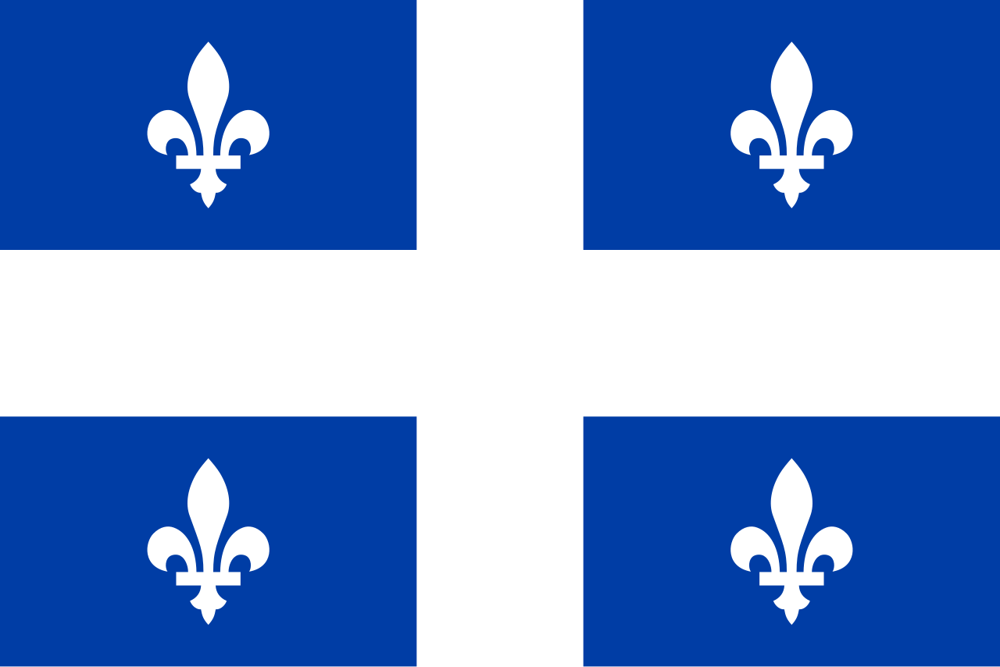
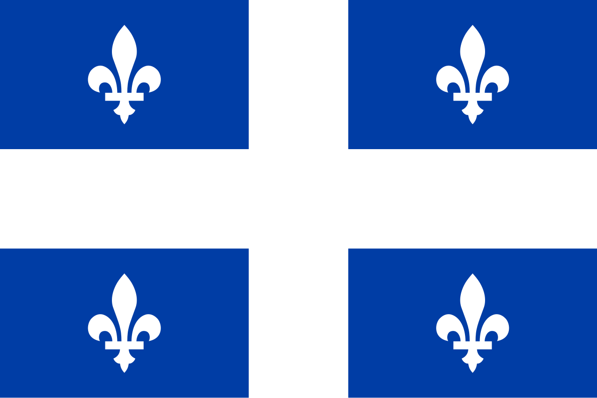

CityLoop Quest Gand


Pendant dix jours de juillet, les Gentse Feesten transforment le centre en immense scène ouverte. L’événement moderne naît en 1843 lorsque la ville regroupe plusieurs kermesses de quartier, mais sa forme actuelle doit beaucoup au renouveau lancé en 1969 autour du café-théâtre Trefpunt et de l’artiste Walter De Buck. Concerts, théâtre de rue, débats, cirque et bals occupent places et quais presque sans interruption. La fête est populaire, parfois chaotique, et profondément liée à la capacité gantoise de mêler culture exigeante et plaisir collectif.

La procession des Stroppendragers rappelle la répression de 1540. Après avoir défié Charles Quint, les notables gantois furent contraints de marcher en chemise avec une corde au cou. Ce symbole d’humiliation a été retourné : la corde blanche est devenue un signe d’insoumission et d’autodérision. Durant les fêtes, les porteurs de corde défilent en costume historique. Le geste ne célèbre pas la défaite, mais la mémoire d’une ville qui préfère raconter ses revers plutôt que les cacher.
Le carillon du Beffroi constitue une tradition sonore plus ancienne. Les cloches annonçaient autrefois travail, couvre-feu, incendie et rassemblement. Aujourd’hui, les concerts de carillon font descendre dans les rues des airs classiques, populaires ou contemporains. Le dragon doré qui domine la tour appartient au même imaginaire civique : il protège symboliquement les privilèges de la ville et apparaît sur affiches, souvenirs et récits pour enfants.
Les marchés restent également importants. Le dimanche, le marché aux fleurs du Kouter perpétue une habitude attestée depuis le XVIIIe siècle, tandis que les brocantes et marchés alimentaires animent différents quartiers. La place n’est jamais seulement commerciale : elle devient un théâtre social où l’on boit un verre, écoute un kiosque à musique ou commente le temps. À Noël, les illuminations et chalets occupent le cœur historique, mais les Gantois gardent un attachement particulier aux rendez-vous moins spectaculaires et réguliers.
Les traditions évoluent au lieu de rester sous cloche. La Fête de la Lumière, organisée à intervalles réguliers, utilise façades et ponts comme supports de créations contemporaines. Les communautés étudiantes, artistiques et internationales ajoutent leurs propres rituels à la ville. Cette capacité d’absorption explique le caractère vivant du folklore gantois : une histoire médiévale peut devenir un défilé humoristique, une cloche ancienne jouer une mélodie récente et un ancien quai industriel accueillir un festival.
Les Floraliën prolongent une autre passion gantoise : l’horticulture. Leur histoire remonte au début du XIXe siècle, lorsque des sociétés de botanique organisèrent des expositions de plantes rares. Les éditions contemporaines ne se limitent plus à aligner des fleurs précieuses ; elles mettent en scène paysages, création florale, recherche et enjeux écologiques. Cette tradition explique aussi le marché dominical du Kouter, où bouquets, plantes et conversations matinales forment un rituel moins spectaculaire que les grandes fêtes, mais profondément enraciné.
La ville aime également jouer avec la nuit. Le plan lumière souligne tours, ponts et façades sans transformer le centre en décor criard. Lors d’événements lumineux, artistes et concepteurs utilisent ruelles, cours et bâtiments industriels comme surfaces narratives. Le plaisir vient souvent du contraste : une abbaye silencieuse reçoit une installation contemporaine, un quai familier devient paysage abstrait, une façade révèle des détails ignorés le jour. Ces manifestations changent de calendrier et de forme, mais elles prolongent une habitude ancienne : occuper collectivement l’espace urbain, détourner les symboles officiels et laisser une place à l’ironie gantoise.
Les marionnettes populaires de Pierke ajoutent une voix plus intime à ce goût du spectacle. Né dans le théâtre de marionnettes gantois, le personnage parle avec insolence, commente l’actualité et ridiculise volontiers les puissants. Sa blouse blanche et son accent local l’éloignent des héros solennels. Dans les salles familiales, les enfants suivent l’aventure tandis que les adultes reconnaissent les allusions politiques. Cette double lecture explique pourquoi Pierke demeure vivant plutôt que rangé parmi les souvenirs folkloriques.